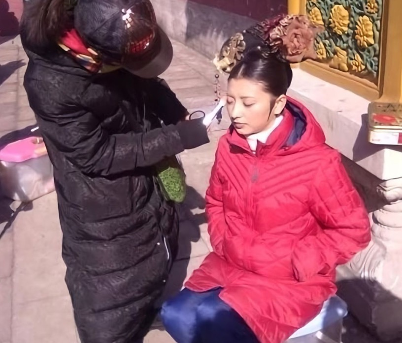
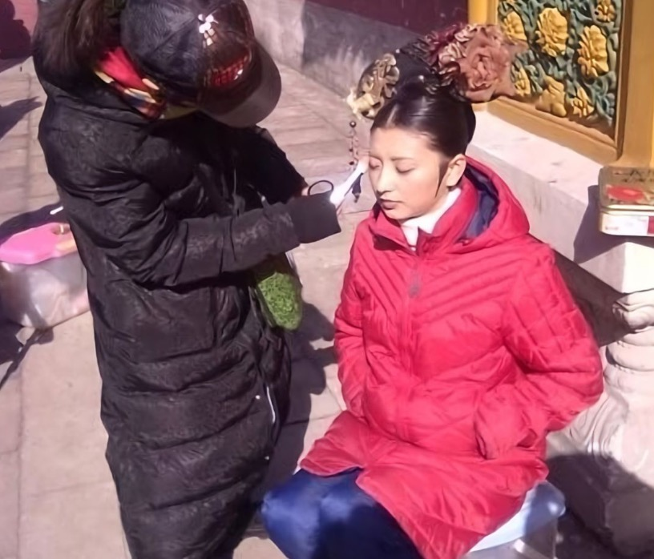

孙俪在接受采访时曾透露，拍摄《甄嬛传》时，无人敢靠近蒋欣。起初，大家还以为是蒋欣如剧中的华妃一般，让人望而生怯。然而，孙俪话锋一转，揭示了其中缘由。原来，华妃头上那顶价值连城的凤冠，乃是一件珍贵无比的古董——"点翠"，其价值高达 8000 万。正因如此，众人皆生怕损坏了这件稀世珍宝。而蒋欣本人也小心翼翼，剧中她的动作之所以慢条斯理，除了角色性格的因素外，也有担心损坏昂贵头饰的缘故。点翠的制作工艺虽不繁复，但对用料极为考究。仅选用翠鸟脖颈处的细软绒毛，而遭受此等伤害的翠鸟往往命不久矣。这般残忍的做法，加之制作点翠时需将翠鸟的软绒毛剪下并粘附于底座，耗时费力，完成一顶点翠需耗费工匠数日之功。因此，当时蒋欣拍摄时，周围人皆不敢近身，她自己也不敢有丝毫懈怠。拍摄数场后，便仿照制作了一顶替代品，将真品妥善送回。

除了华妃的点翠，《甄嬛传》剧组还为剧中人物的造型做了精心筹备。剧组专程请来了业内声名赫赫的化妆造型师陈敏正，为该剧精心设计造型。剧中妃嫔们的旗头、珠钗、耳环和手镯等，无一不是根据人物性格量身定制。不知大家是否留意过那些主要演员的旗头？其实每一款都别具匠心。眉姐姐后期的旗头采用了独特的歪斜设计，令人眼前一亮，这般巧思不仅彰显了眉姐姐的个性与独特，更凸显了她内心的叛逆与执着。

 
